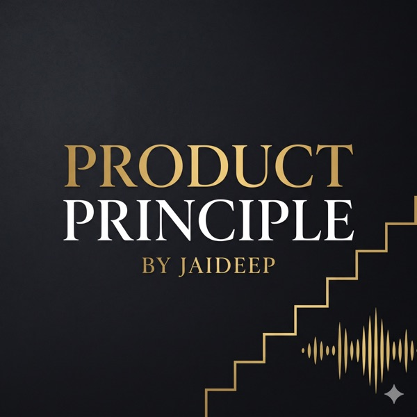

About
Business viability meets enterprise architecture.
I lead product and technology at scale, with 25+ years across India and the US modernizing wealthtech and core financial platforms. As a former founder who built Clearfunds from zero to a successful exit to a leading digital payments ecosystem, I bridge business viability with enterprise architecture.
Today, my focus is deploying AI as core operational infrastructure rather than superficial features. I build agentic workflows, scalable automations, and LLM-driven systems that generate real enterprise leverage—backed by the commercial discipline to know where software creates value and where it adds noise.
Skills & Expertise
The toolkit — product, tech & AI.
Twenty-plus things I reach for to take regulated fintech products from idea to production. They bob around a little — much like scope.
Projects
Built end-to-end. Real applications & automations.
Things I've built end-to-end — full applications and production AI-native automations on a self-hosted n8n instance. A few favourites below; more live on GitHub.
MF Tracker — Private Mutual-Fund Analytics
Full-Stack · FinTechA local-first portfolio tracker for Indian mutual-fund investors. Import the CAMS/CDSL statement you already receive and get XIRR, rolling returns, benchmark comparison (your actual cash flows replayed into Nifty 50/500), a 0–100 health scorecard, and a per-platform model-rebalancing planner — computed and stored entirely on your own machine. NAVs come free from AMFI, benchmarks from Yahoo Finance: no account, no API keys, nothing uploaded. Tracks a whole family's folios in one database, auto-routed by PAN. Illustrative analytics, not investment advice.
Weekly Portfolio Intelligence
AI · AutomationEvery week, syncs my US-equity holdings and benchmarks from a Google Sheet, computes multi-period performance signals (1w/1m/3m/6m), pulls company news for flagged tickers, and uses Gemini to write a grounded commentary email — surfacing persistent laggards, concentration risks, and churn candidates. Not advice; signals for attention.
Automated SEO Report
AI Agents · SEOA ~50-node pipeline that pulls Google Search Console, Google Analytics, and PageSpeed Insights data (current vs. previous period), then runs two Gemini agents — one Marketing, one Technical — to generate audience-specific insight reports, rendered to HTML and emailed to the right stakeholders automatically.
Newsletter Intelligence (Map-Reduce)
AI · SummarizationTurns a daily flood of newsletters into one readable digest. Fetches emails per source from Gmail, cleans and batches them by token budget, then runs a map-reduce with Gemini — summarizing each batch, then composing a single text-to-speech-friendly HTML digest with strict grounding to avoid hallucination.
Experience
Twenty-five years, one throughline.
Chief Product & Technology Officer
Feb 2024 – PresentMotilal Oswal Asset Management Company
Leading the Digital Platforms team — encompassing Product Design and Technology for both Web and Mobile platforms across Investor and Distributor channels. Driving transformative changes in the products and services delivered to valued investors at one of India's most trusted AMCs.
Senior Director of Product — SaaS Platform
Dec 2022 – Dec 2023Turtlemint (Turtlefin B2B SaaS)
Led the product team in an Insurtech B2B SaaS platform catering to bancassurance clients — developing business modules and capabilities for white-labelled retail insurance platforms and API-based embedded insurance products.
SVP & Head of Product & Technology
May 2019 – Nov 2022Glide Invest
Built a new-age investment advisory platform (web + mobile) from scratch, focused on helping retail investors reach financial goals through passive investing and risk-adjusted asset allocation. Took the product to market with a 4.2 rating on the Google Play Store. Also completed SEBI Registered Investment Adviser (NISM-VA/XA/XB) requirements.
Co-Founder & CTO
May 2017 – Feb 2019Clearfunds (Harvest Fintech)
Shaped the product and architecture of an online robo-advisory Fintech platform that let investors across India buy DIRECT plans of mutual funds across 36/38 fund houses at the lowest possible cost — building the technology team and delivering a product that reached $45M in AUM prior to acquisition. Followed Agile methodology, leading a curated portfolio redesign with minimalist UX. Clearfunds was acquired by Mobikwik in 2018 and continues as its wealth management arm.
Founder & CEO
May 2016 – Apr 2017LoanManch (Finovate Technology Platforms)
Oversaw end-to-end conceptualisation and development of a P2P lending platform for retail investors and borrowers. Built a complex credit scoring matrix for assessing borrower creditworthiness. Distributed ₹25L to 15 borrowers — with zero defaults.
General Manager — Strategy
Apr 2013 – Mar 2016Peninsula Land Ltd.
Led a 15-month operations transformation and re-org to improve project execution accountability, followed by a 9-month sales transformation to improve customer acquisition measurement. Designed and implemented dynamic BI dashboards (Qlikview) for Management, Sales, and Operations. Participated on the steering committee of the SAP project with IBM.
Business Head
Apr 2011 – Mar 2013Bridgepoint Learning Pvt Ltd (Ashok Piramal Group)
Led an entrepreneurial initiative to establish the group in the K-12 education space in western India — building the business roadmap, marketing, operations, and financial plans for International Schools following IGCSE and IB curriculums. Through CSR initiatives at government secondary schools in Thane district, impacted 1,000+ students through science and sports programmes.
General Manager — Corporate Strategy & IT
Oct 2008 – Mar 2011Ashok Piramal Group
Managed Corporate Planning & Development and Corporate IT across six group businesses. Created and implemented a Corporate IT strategy that consolidated vendors, licenses, and networking services — saving over ₹50L/year for the group. Also served as Interim Business Head at Jammin (Aug 2009–Mar 2010): one of India's top 3 Family Entertainment Centre businesses. Led 70+ staff across 6 outlets with full P&L responsibility, increasing footfalls by 40% and reducing costs by 15% YOY.
Consultant
Aug 2005 – Jun 2008Diamond Management & Technology Consultants (now Strategy& at PwC)
Engaged with clients in the insurance, healthcare, and airline industries to build and prioritise portfolios of strategic technology projects. Part of the think tank developing the firm's viewpoint on Electronic Health Records (EHRs) and Personal Health Records (PHRs). Actively contributed to intellectual capital and on-campus recruiting.
Consultant
Mar 1999 – Apr 2004Deloitte Consulting LLP
Engaged with clients in healthcare, government, and financial services to plan, build, and deploy customised IT solutions. Earned CCNA (2000) and Java Level 1 (2001) certifications during this tenure.
Intern — Information Management Leadership Program
Jun 1998 – Aug 1998GE Medical Systems
Received the Student Intern Award from among 120+ interns at GE Healthcare Systems — presented by Jeffrey R. Immelt (later Chairman & CEO of GE).
Software Intern
May 1997 – Aug 1997Vetri Systems Inc.
Developed a Java-based 2-tier application serving as a dynamic email and address book applet for customers of Vetri Systems.
Education
Where it started.
MBA — Strategy & Entrepreneurship
University of Chicago Booth School of Business
2002 – 2005
Top 5 business school in the US (US News & World Report rankings).
- Co-Founder of the BioPharma Group
- VP Finance — drove funding and alumni sponsorship
- Led logistics for the 1st India Business Conference (350 students, 50 speakers)
- Active Booth Alumni member in India
BBA — Information Systems & Computer Sciences
University of Wisconsin-Madison
1994 – 1998
Top 50 public school in the US; top 10 in Computer Sciences.
- Publicity Chair, Indian Students Association
- AIESEC Madison — Sales Representative & Webmaster
- Top 10 Summer Interns award for work at GE Medical Systems (from Jeffrey R. Immelt)
Certifications
Continuous learning never stops.
Leveraging Generative AI for Project Management
LinkedIn Learning
Jan 2024
Agile Product Owner Role: Foundations
LinkedIn Learning
Jan 2024
Product Management Insights
LinkedIn Learning
Dec 2023
Learning Design Thinking
LinkedIn Learning
Dec 2023
Product Analytics Mastery Course
Mixpanel × Servian
Mar 2021
NISM X-B — Investment Advisor (Level 2)
National Institute of Securities Markets
Nov 2019
NISM X-A — Investment Adviser (Level 1)
National Institute of Securities Markets
Nov 2019
NISM V-A — Mutual Funds Distributor
National Institute of Securities Markets
Nov 2019
Writing
Thinking out loud, in public.
I write on Medium about product management, fintech, analytics, and startup operations — lessons from 25+ years in the trenches. I also publish a weekly podcast.

Product Principle of the Week
One product principle each week, explained in about eight minutes. Each episode takes an idea from product management, analytics or AI, shows how it plays out in practice, and ends with a decision you can act on. Built for product leaders and builders in fintech and wealth management, with the investor and distributor view included wherever it applies.
Subscribe via RSS feed →BRD vs PRD: Navigating the Dynamic Interplay Between Business Strategy and Product
Discussion on the distinct yet complementary roles of Business and Product documentation in driving successful outcomes.
Read on Medium →It's NOT the Tool Stupid! It's You!!!
Honest reflections on the many mistakes made while adopting a Customer Data Platform — and what I'd do differently.
Read on Medium →First Steps in Setting up Your Product Analytics Metrics
A conceptual framework for identifying and instrumenting the right metrics for your product from day one.
Read on Medium →Starting off with Product Analytics
Moving beyond Google Analytics to build a real product analytics practice — tools, mindsets, and first principles.
Read on Medium →My Experiences with Outsourcing and In-house Development of My Product
Hard-won advice for early-stage founders on the critical build-vs-outsource decision — and how to navigate it wisely.
Read on Medium →Uberization of Fintech (Part 01)
What “Uberization” really means, and how it applies to Fintech.
Read on Medium →Resources
Things I actually use.
A small, curated set of resources I actually use and point people to — for building AI products, shipping as a PM, and running a startup. Kept short on purpose; quality over quantity.
AI & Building
- OpenAI Platform DocsAPI, prompting, tools
- Google AI for DevelopersGemini API & guides
- Anthropic DocsClaude & agent patterns
- Model Context ProtocolStandard for AI tools/agents
- Prompt Engineering GuideTechniques, references
Product & Analytics
- Lenny's NewsletterProduct, growth, careers
- SVPG (Marty Cagan)Product management foundations
- Mixpanel DocsProduct analytics setup
- My writing on PM & analyticsBRD vs PRD, metrics, more
Startup & Fundraising
- Y Combinator LibraryStartup playbooks & talks
- First Round ReviewOperating & scaling essays
- Sequoia: Writing a Business PlanThe classic pitch structure
Recommendations
In their words.
"Jaideep is one of the most delightful people I had the pleasure of working for in my career. He had a unique ability to keep our team organised and on schedule, while his constant communication helped lift our spirits in challenging situations. He is one of the very few Product Managers who understands design and technical details very well — and he positively influenced my career trajectory in Fintech."
"Jaideep brings amazing energy and enthusiasm to the team. He has the ability to navigate tough and complex situations with ease. A rare blend of intellectual who is willing to get his hands dirty and work the finer details of problem solving. He has a deep understanding of business — working with him has been an amazing experience."
"Jaideep had the right sense of analysing the client's current operating processes to defining the roadmap to the target future state. He showed excellence and agility in interacting with senior executives with a focus on strategic consulting and business development. His passion for solving clients' business problems and making an impact to their organisation is something I follow to this day."
"In my sales and marketing transformation program at our client Peninsula, Jaideep’s efforts in ensuring leadership involvement during solution design, co-ownership with all partners involved, collaborative planning within and outside Peninsula, consistent risk assessment and strong communication made sure that the transformation programs led by him delivered high value."
"Jaideep has a great ability to both understand and articulate the big picture while at the same time knows when he has to get his hands dirty in the details to verify that the big picture is correct. Most importantly, Jaideep creates an environment which encourages teammates and junior resources to participate and contribute to their fullest."
Read all 20+ LinkedIn recommendations from colleagues, founders, and senior leaders across Jaideep's career.
View on LinkedIn →